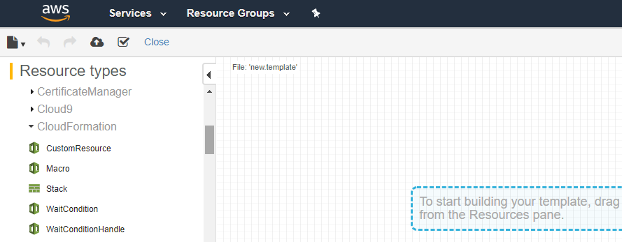
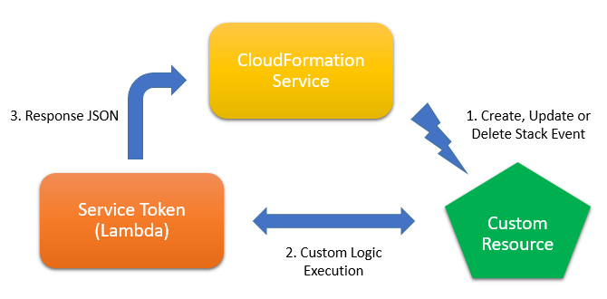
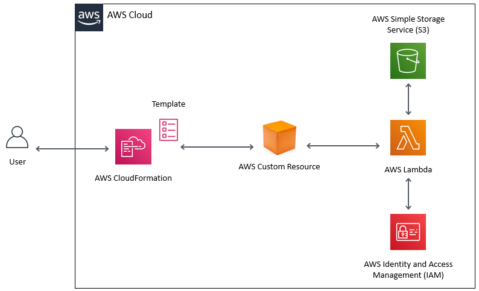
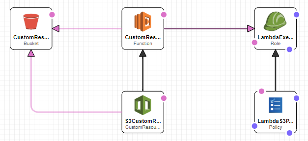

A. Components of a Custom Resource Solution
AWS custom resources are a powerful way to add flexibility to AWS CloudFormation templates. While other AWS resources represent a specific service (RDS, EC2 etc.), custom resources act like generic placeholders that can be used to inject any additional logic in CloudFormation templates. A custom resource is typically attached to an AWS Lambda function which can contain any user-specified code. This code gets executed whenever the CloudFormation template is deployed, updated or deleted. This way, custom resources allow you to extend CloudFormation in ways that are not possible with regular AWS services.
This article first presents the architectural components of custom resources and explains how they interact with the CloudFormation service. Then, we look at a simple case study where we implement custom provisioning logic using a lambda-backed custom resource. Prior knowledge of CloudFormation, Lambda and IAM services is required.
The source code and latest version of this article are available on GitHub.
Whenever a user deploys, updates or deletes a stack, the CloudFormation service works with the custom resource and its associated Service Token to execute the custom code. Following is a description of the main parts of a custom resource solution along with corresponding sample code:
Like any other AWS resource, custom resources can be added to a CloudFormation template using the AWS Template Designer.
The corresponding JSON template code will look like this:
"myCustomResource": {
"Type": "AWS::CloudFormation::CustomResource",
"Properties": {
"..."
}
}Every custom resource must be linked with an AWS service which provides the required custom logic (Lambda or Simple Notification Service). This article uses a lambda function to implement the custom logic.
"myCustomResource": {
"Type": "AWS::CloudFormation::CustomResource",
"Properties": {
"ServiceToken": {
"Fn::GetAtt": [
"myLambdaFunction",
"Arn"
]
}
}
}When a CloudFormation template is deployed, updated or deleted, the CloudFormation service sends corresponding events to the Service Token. An event structure looks like the following:
{
"RequestType": "Create",
"ResponseURL": "http://pre-signed-S3-url-for-response",
"StackId": "arn:aws:cloudformation:us-east-1:123456789012:stack/stack-name/guid",
"RequestId": "Auto-generated unique Id for this request",
"ResourceType": "AWS::CloudFormation::CustomResource",
"LogicalResourceId": "myCustomResource",
"ResourceProperties": {
"myParam1": "myValue1",
"myParam2": "myValue2"
}
}RequestType
Indicates if the stack is being created, updated or deleted. The Service Token can take appropriate actions for each request type.
ResponseURL
A pre-signed S3 URL that the Service Token invokes to inform CloudFormation service that it has finished executing its custom logic and the stack operation can be continued.
ResourceProperties
An object that contains the input parameters specified in the CloudFormation template that are passed verbatim to the Service Token.
The developer can specify arbitrary parameters in the CloudFormation template that are passed as it is to the Service Token when it is invoked by the CloudFormation service. These parameters are available under ResourceProperties property of the event object.
"myCustomResource": {
"Type": "AWS::CloudFormation::CustomResource",
"Properties": {
"ServiceToken": {
"Fn::GetAtt": [
"myLambdaFunction",
"Arn"
]
},
"myParam1": "myValue1",
"myParam2": "myValue2"
}
}Once the Service Token has finished executing, it must send a response back to CloudFormation using the pre-signed S3 URL. Along with this response, it must send a JSON object payload containing the result of the custom resource. The Status property indicates if processing by the custom resource was successful or not. Following is an example of the JSON response object:
{
"Status": "SUCCESS",
"Reason": "See the details in CloudWatch Log Stream: 2019/09/03/[$LATEST]881c8e96cf894a7cb0f9fe1f0937c4cf",
"PhysicalResourceId": "2019/09/03/[$LATEST]881c8e96cf894a7cb0f9fe1f0937c4cf",
"StackId": "arn:aws:cloudformation:us-east-1:2X5X9X6X7X31:stack/myCustomStack/006b6710-ce13-11e9-a761-12de81a2e318",
"RequestId": "884cfc24-ab17-46e1-94ce-59ae9a610cdb",
"LogicalResourceId": "myCustomResource",
"NoEcho": false,
"Data": null
}The following diagram shows different parts of a custom resource solution and how they interact with each other:
User starts deployment of a CloudFormation template.
CloudFormation service sends a "Create" event to the custom resource's Service Token. This event contains the pre-signed URL that the Service Token should use to post its response.
The Service Token executes its custom logic.
Service Token then sends a response to the CloudFormation service by invoking the pre-signed S3 URL, indicating success or failure
CloudFormation service proceeds with rest of the stack deployment operations.
Similar workflow occurs for "Update" and "Delete" events.
Consider a scenario where a CloudFormation template creates a new S3 bucket during deployment and deletes this bucket during stack teardown. If this S3 bucket holds any objects, then deletion will fail because CloudFormation service can delete only empty buckets. This will cause entire teardown operation to fail and CloudFormation service will not proceed with deleting rest of the resources. To work around this problem, we can use a lambda-backed custom resource. During teardown, this lambda can delete all the objects in the S3 bucket. Then, CloudFormation can proceed to delete the empty bucket.
The following diagram shows the architectural components of the solution:
This section describes the components used in the case study solution along with their CloudFormation template code.
To use the code, you can open CloudFormation Designer, create the resources described below and then copy-paste the code for each resource into its editor window.
An S3 bucket which will hold user data after the CloudFormation stack has been deployed
{
"Resources": {
"CustomResBucket": {
"Type": "AWS::S3::Bucket",
"Properties": {
"BucketName": {
"Ref": "S3DataBucket"
}
}
}
}
}An IAM Policy and a Role that will allow Lambda function to delete objects from S3 bucket.
{
"Resources": {
"LambdaS3Policy": {
"Type": "AWS::IAM::Policy",
"Properties": {
"PolicyName": "LambdaS3Policy",
"PolicyDocument": {
"Version": "2012-10-17",
"Statement": [
{
"Effect": "Allow",
"Action": "s3:DeleteObject",
"Resource": {
"Fn::Join": [
"",
[
"arn:aws:s3:::",
{
"Ref": "S3DataBucket"
},
"/*"
]
]
}
},
{
"Effect": "Allow",
"Action": "s3:ListBucket",
"Resource": {
"Fn::Join": [
"",
[
"arn:aws:s3:::",
{
"Ref": "S3DataBucket"
}
]
]
}
}
]
},
"Roles": [
{
"Ref": "LambdaExecutionRole"
}
]
}
}
}
}The IAM role also uses a managed policy for logging to CloudWatch Logs.
{
"Resources": {
"LambdaExecutionRole": {
"Type": "AWS::IAM::Role",
"Properties": {
"AssumeRolePolicyDocument": {
"Version": "2012-10-17",
"Statement": [
{
"Effect": "Allow",
"Principal": {
"Service": [
"lambda.amazonaws.com"
]
},
"Action": [
"sts:AssumeRole"
]
}
]
},
"ManagedPolicyArns": [
"arn:aws:iam::aws:policy/service-role/AWSLambdaBasicExecutionRole"
]
}
}
}
}A lambda function to implement logic for the custom resource. This is the Service Token associated with the custom resource.
{
"Resources": {
"CustomResHandlerLambda": {
"Type": "AWS::Lambda::Function",
"Properties": {
"Role": {
"Fn::GetAtt": [
"LambdaExecutionRole",
"Arn"
]
},
"Runtime": "nodejs12.x",
"Timeout": 300,
"Handler": "index.handler",
"Code": {
"S3Bucket": {
"Ref": "CustomResLambdaBucket"
},
"S3Key": {
"Ref": "CustomResLambdaZip"
}
}
}
}
}
}Add dependencies for Lambda function:
{
"Resources": {
"CustomResHandlerLambda": {
"Type": "AWS::Lambda::Function",
"DependsOn": [
"CustomResBucket",
"LambdaExecutionRole"
]
}
}
}NodeJS implementation of the lambda function will iterate over the contents of S3 bucket and delete them:
const AWS = require('aws-sdk');
const s3 = new AWS.S3();
const {promisify} = require('util');
const response = require('./cfn-response');
exports.handler = async function(event, context) {
console.log(context.functionName + ' lambda called for: ', event.RequestType);
// --------------------------------------------------------------------------------------------
// Print the incoming CloudWatch event.
// --------------------------------------------------------------------------------------------
// console.log('Received event: ', JSON.stringify(event, null, 2));
let result = response.SUCCESS;
if(event.RequestType == 'Delete') {
console.log('Processing Delete request');
let continuationToken = null;
let totalItemCount = 0;
// ----------------------------------------------------------------------------------------
// Parameters to list contents of S3 bucket
// ----------------------------------------------------------------------------------------
const listParams = {
Bucket: event.ResourceProperties.bucketName,
MaxKeys: 1
};
// ----------------------------------------------------------------------------------------
// Parameters to delete contents of S3 bucket
// ----------------------------------------------------------------------------------------
let deleteParams = {
Bucket: event.ResourceProperties.bucketName,
Delete: { Objects: [] }
};
// ----------------------------------------------------------------------------------------
// Iterate over the contents of the bucket and delete them
// ----------------------------------------------------------------------------------------
while(true) {
try {
// --------------------------------------------------------------------------------
// After the previous iteration, some objects are still left in the bucket.
// Continue the iteration.
// --------------------------------------------------------------------------------
if(continuationToken) {
listParams.ContinuationToken = continuationToken;
}
// --------------------------------------------------------------------------------
// Retrieve the next set of objects (count is decided by 'MaxKeys')
// --------------------------------------------------------------------------------
var data = await s3.listObjectsV2(listParams).promise();
console.log('listObjects KeyCount: ' + data.KeyCount + ' IsTruncated: ' + data.IsTruncated + ' NextContinuationToken: ' + data.NextContinuationToken);
// --------------------------------------------------------------------------------
// Iterate over the returned S3 objects and add them to list of items to delete
// --------------------------------------------------------------------------------
for(var i = 0; i < data.Contents.length; ++i) {
console.log('S3 object: ' + data.Contents[i].Key);
++totalItemCount;
let oneItem = { Key: data.Contents[i].Key };
deleteParams.Delete.Objects.push(oneItem);
}
// --------------------------------------------------------------------------------
// Delete the set of S3 objects
// --------------------------------------------------------------------------------
console.log('Deleting objects from this iteration');
await s3.deleteObjects(deleteParams).promise();
// --------------------------------------------------------------------------------
// Are there more objects in S3 bucket?
// --------------------------------------------------------------------------------
if(data.IsTruncated === true) {
console.log('More objects present in bucket. Continuing the iteration');
continuationToken = data.NextContinuationToken;
} else {
console.log('Finishing the iteration. Total item count: ' + totalItemCount);
continuationToken = null;
break;
}
}
catch(e) {
console.log('Error in listObjects/deleteObjects: ' + e);
result = response.FAILED;
break;
}
}
}
// --------------------------------------------------------------------------------------------
// Even if an event is not handled ('Create', 'Update' or 'Delete'), always send the response
// back so that CloudFormation can continue with the stack operation.
// --------------------------------------------------------------------------------------------
console.log('Sending response to CloudFormation');
const sendAsync = promisify(response.send);
try {
const ret = await sendAsync(event, context, result, null, null, false);
console.log('Successful in sending response to CloudFormation: ' + ret);
return ret;
}
catch(err) {
console.log('Error in sending response to CloudFormation. Error: ' + err);
throw err;
}
}; The lambda function uses a helper script, cfn-response, for invoking the pre-signed S3 URL to send the response back.
// This source code has been adapted from AWS sample source available at:
// https://docs.aws.amazon.com/AWSCloudFormation/latest/UserGuide/cfn-lambda-function-code-cfnresponsemodule.html
exports.SUCCESS = "SUCCESS";
exports.FAILED = "FAILED";
// ------------------------------------------------------------------------------------------------
// This function is used to send response back from custom resource lambda
// ------------------------------------------------------------------------------------------------
exports.send = function(event, context, responseStatus, responseData, physicalResourceId, noEcho, callback) {
var https = require("https");
var url = require("url");
// --------------------------------------------------------------------------------------------
// Payload for the HTTP PUT call
// --------------------------------------------------------------------------------------------
var responseBody = JSON.stringify({
Status: responseStatus,
Reason: "See the details in CloudWatch Log Stream: " + context.logStreamName,
PhysicalResourceId: physicalResourceId || context.logStreamName,
StackId: event.StackId,
RequestId: event.RequestId,
LogicalResourceId: event.LogicalResourceId,
NoEcho: noEcho || false,
Data: responseData
});
console.log("Response body:\n", responseBody);
// --------------------------------------------------------------------------------------------
// event.ResponseURL is a pre-signed URL that is provided by CloudFormation so that the lambda
// function can send a response back once it is finished with its processing.
// --------------------------------------------------------------------------------------------
var parsedUrl = url.parse(event.ResponseURL);
// --------------------------------------------------------------------------------------------
// Parameters for HTTP PUT call
// --------------------------------------------------------------------------------------------
var options = {
hostname: parsedUrl.hostname,
port: 443,
path: parsedUrl.path,
method: "PUT",
headers: {
"content-type": "",
"content-length": responseBody.length
}
};
// --------------------------------------------------------------------------------------------
// Initiate the HTTP PUT call
// --------------------------------------------------------------------------------------------
var request = https.request(options, function(response) {
console.log("Successful in sending PUT request for response. Status code/message: " + response.statusCode + "/" + response.statusMessage);
callback(null, "" + response.statusCode + "/" + response.statusMessage);
});
request.on("error", function(error) {
console.log("Failed to send PUT request for response. Error: " + error);
callback(error, null);
});
// --------------------------------------------------------------------------------------------
// Send the response payload and finish the PUT call
// --------------------------------------------------------------------------------------------
request.write(responseBody);
request.end();
};A custom resource which is linked to the lambda function. The custom resource passes the S3 bucket name as an input parameter (bucketName) to the lambda.
{
"Resources": {
"S3CustomResource": {
"Type": "AWS::CloudFormation::CustomResource",
"Properties": {
"ServiceToken": {
"Fn::GetAtt": [
"CustomResHandlerLambda",
"Arn"
]
},
"bucketName": {
"Ref": "S3DataBucket"
}
}
}
}
}Add dependencies for the custom resource:
{
"Resources": {
"S3CustomResource": {
"Type": "AWS::CloudFormation::CustomResource",
"DependsOn": [
"CustomResBucket"
]
}
}
}CloudFormation input parameters for specifying the location of lambda code and the name of new S3 bucket which will be created as part of CloudFormation deployment.
{
"Parameters": {
"S3DataBucket": {
"Description": "Name of the new S3 bucket which will be created during deployment and where user data will be stored. It should be a globally unique name.",
"Type": "String"
},
"CustomResLambdaBucket": {
"Description": "Name of the S3 bucket where code for Lambda function is stored",
"Type": "String"
},
"CustomResLambdaZip": {
"Description": "Path of the S3 object where code for Lambda function is stored",
"Type": "String"
}
}
}The CloudFormation template requires following inputs and customizations:
| Parameter | Default | Description |
|---|---|---|
| S3DataBucket | <Mandatory> |
Name of the new S3 bucket which will be created during deployment of CloudFormation template |
| CustomResLambdaBucket, CustomResLambdaZip | <Mandatory> |
Location of the lambda source code |
| Timeout | 3 seconds |
User can change the Timeout property of the lambda function if a large number of S3 objects need to be deleted |
| MaxKeys | <Mandatory> |
User can change the MaxKeys property in the lambda function code to control how many S3 objects are returned in each call to listObjects |
When the CloudFormation template is deployed, updated or deleted, the lambda function will always be invoked for each of these events. The lambda function must send a response back even if it does not handle a particular event. If no response is sent for any of these events, CloudFormation will hang and eventually fail with a timeout.
It is a good practice to catch all exceptions in the lambda function so that a response is always sent using the response URL. Otherwise, the CloudFormation stack will remain in CREATE_IN_PROGRESS stage until it times out.
AWS provides sample code for sending response from lambda function by invoking the pre-signed S3 URL. This sample code has been re-used in the cfn-response module included with this article.
This article provided a brief overview of AWS custom resources. It then explained how we can add custom logic to a CloudFormation template to delete the contents of an S3 bucket before CloudFormation attempts to delete it. Custom resources can also be used in several other scenarios like provisioning AWS resources that are not (yet) supported by CloudFormation, running migration scripts, initializing databases or uploading new website content to an S3 bucket on every deployment.